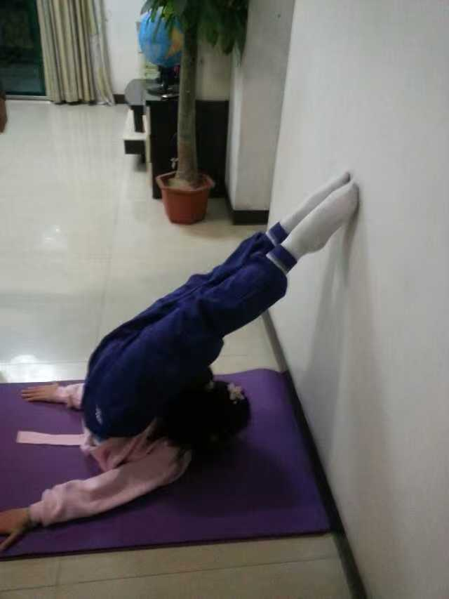
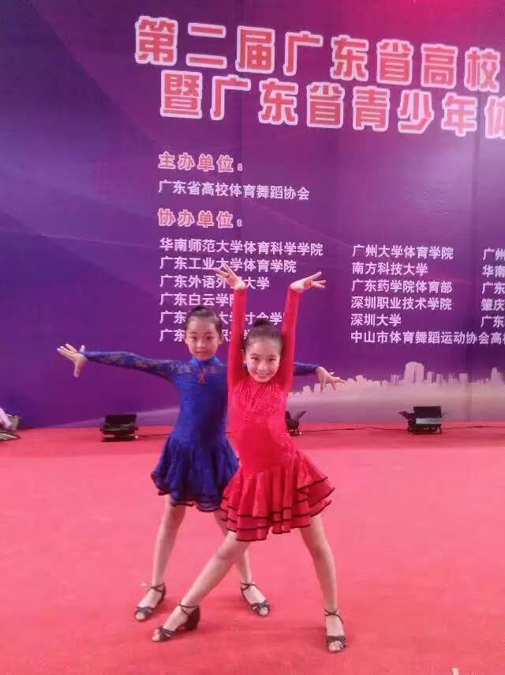

____ _
| _ \ __ _ _ __ ___(_)_ __ __ _
| | | |/ _` | '_ \ / __| | '_ \ / _` |
| |_| | (_| | | | | (__| | | | | (_| |
|____/ \__,_|_| |_|\___|_|_| |_|\__, |
|___/
Dancing has been a part of my life for as long as I can remember.
I was active in Chinese traditional dance, Latin dance and Street dance
In elementary school, I was a dance student and spent hours practicing the basics of dance.
I won a lot of prizes in latin dance, including a third place in international tournament.
I had wonderful memories with my friends during this time, training and working hard together.